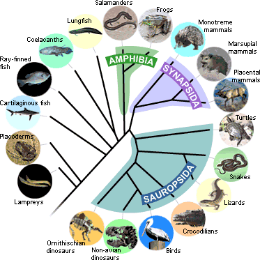
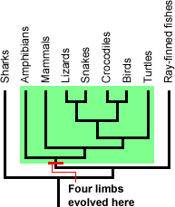

درختهای فیلوژنتیکی مانند درختهای خانوادگی نمودی از نیاکان هستند. اگرچه، در حالی که خانوادهها این فرصت را دارند تا تاریخچهٔ خود را، در حالی که رخ میدهد، ثبت کنند؛ نسبهای فرگشتی چنین فرصتی را ندارند -گونهها در طبیعت همراه با سندی که نشاندهندهٔ تاریخ خانوادگی آنها باشد زیست نمیکنند. به جای آن، زیستشناسان باید این سرگذشت را با جمعآوری و تحلیل شواهد، بازسازی کنند -شواهدی که از آنها برای طرحِ «یک فرضیه در مورد چگونگیِ ارتباطِ جانداران» (یک فیلوژنی) استفاده میشود.

برای ساختن یک درخت فیلوژنتیکی مثل بالا، زیستشناسان اقدام به جمعآوری دادههایی در مورد ویژگیهای جاندار مورد نظر خود میکنند. ویژگیها، خصیصههای قابل وراثتی هستند که میتوان آنها را در موجودات مختلف سنجید، مثل ویژگیهای فیزیکی (ریختشناختی1)، توالیهای ژنتیکی، یا صفات رفتاری. برای ساختن فیلوژنیِ مهرهداران، با بررسیِ نمایندهٔ هر نسب شروع و اقدام به شناختِ ریختشناسیِ بنیادینِ آنها میکنیم، خواه آن نسب داری ستون مهره، اسکلت استخوانی، چهار اندام زیرین، تخمِ مشیمهدار2 و... باشد یا نه.
استفاده از ویژگیهای اشتقاقیِ مشترک3
هدف ما یافتنِ شواهدی است که به ما کمک کند جانداران را به صورتی دستهبندی کنیم که کلادهایی هرچه کمتر فراگیر داشته باشیم (کلادهایی دقیقتر و شامل تعداد کمتری نسب). بهخصوص، ما به ویژگیهای اشتقاقیِ مشترک علاقهمندیم. یک «ویژگیِ مشترک» چیزی است که در دو نسب بهطور مشترک وجود دارد، و یک «ویژگیِ اشتقاقیْ» در نسبِ منتهی به یک کلاد شکل گرفته است و اعضای آن کلاد را از بقیه جدا میکند.

ویژگیهای اشتقاقیِ مشترک میتوانند برای دستهبندی جانداران به صورت کلاد استفاده شوند. برای مثال، دوزیستها، لاکپشتها، مارمولکها، مارها، تمساحها، پرندگان و پستانداران، یا چهار اندام زیرین (دست یا پا) دارند، یا زمانی چهار اندام زیرین داشتهاند. ممکن است وقتی به مارهای مدرن نگاه میکنید اثری واضح از اندام زیرین نبینید، ولی سنگوارهها نشان میدهد که مارهای باستانی اندام زیرین داشتهاند و برخی از مارهای مدرن هنوز اندام زیرینِ ابتدایی خود را حفظ کردهاند. «چهار اندامی4» یک ویژگیِ اشتقاقیِ مشترک است که از یک نیای مشترک به ارث رسیده است و به متمایز کردنِ این کلادِ بهخصوص از مهرهداران از دیگر کلادها کمک میکند.
اگرچه، وجود چهار اندام زیرین کمکی به مشخص کردنِ ارتباطاتِ درون کلاد (سبز رنگ در تصویر قبل) نمیکند، به این دلیل که همهٔ نسبهای داخل آن این ویژگی را دارند. برای مشخص کردنِ ارتباطاتِ درونِ آن کلاد باید ویژگیهای دیگری که بین نسبهای آن کلاد تمایز ایجاد میکند را بررسی کنیم.